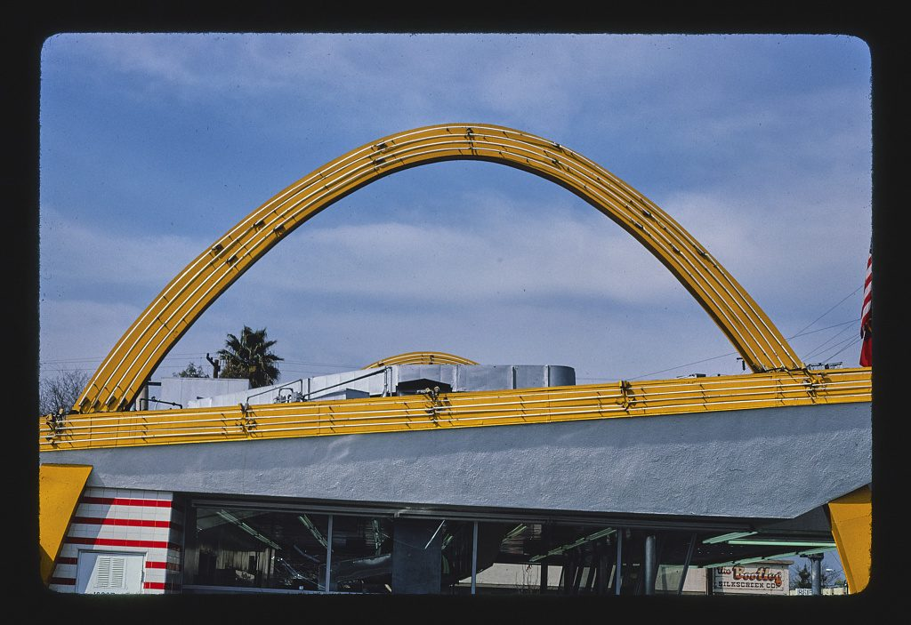

References / Architecture / 506
McDonald’s, Downey, California
The oldest surviving McDonald’s, opened in 1953 to Stanley Clark Meston’s standard design: two yellow arches pierce a roof slab that slopes down toward the street.
- Source
- Library of Congress: John Margolies, McDonald’s, Downey, California, 1985
- Creator
- Stanley Clark Meston (standard design)
- Made
- Opened 18 August 1953 (Wikipedia); photographed 1985
- Style
- Googie (agent-proposed, not yet reviewed by a person)
- Moods
- Roadside, optimistic, bold
- Evidence
- Downloaded and inspected John Margolies’s 1985 color slide, Library of Congress LC-MA05-6987, 1024 × 703 px. Also inspected his 1985 detail of the roadside sign (LC-MA05-1501) in a scratchpad; it is not stored.
- Reviewed
- Rights
- Open license, stored. License: public domain. Rights policy
Context
The stand at 10207 Lakewood Boulevard opened on 18 August 1953. It is the third McDonald’s outlet and keeps the original Golden Arches facade. Franchisees of the McDonald brothers had to use Stanley Clark Meston’s design. With its sign it was found eligible for the National Register of Historic Places in 1984. Wikipedia: Oldest McDonald’s restaurant.
The Googie article names the Downey stand as a preserved example of the style. Wikipedia: Googie architecture.
Observed
- A tall parabolic arch of yellow sheet metal, outlined with several parallel tubes along its length, rises from one end of the roof and lands at the other.
- A second arch shows behind it, at the far side of the roof.
- A band of yellow tubes runs along the roof edge, and a thick white roof slab slopes down from right to left over a glass front.
- Yellow wedge-shaped panels end the roof at both corners; a wall at left has red and white horizontal stripes.
- The ground is clear blue sky with white cloud; the palette is yellow, white, red, and blue.
Why it belongs
The arches carry no load: they are a sign built into the building, which Googie made into a rule. The parallel tubes along them look like lighting tubes, but this daytime photograph does not show them lit.
Borrow
Put one bold parabolic arc across a header, outlined with two or three parallel lines.
Slope the main panel down at an angle and end it with a wedge in the accent color.
Measured
Machine-extracted by tools/image-traits.py on . Full measurement.
- Mean chroma
- 0.18
- Palette
- #171717 22%
- #8a99ba 19%
- #6384b9 16%
- #768fbc 5%
- #202327 5%
- #69788b 4%
- #758296 4%
- #9fa9c2 3%

